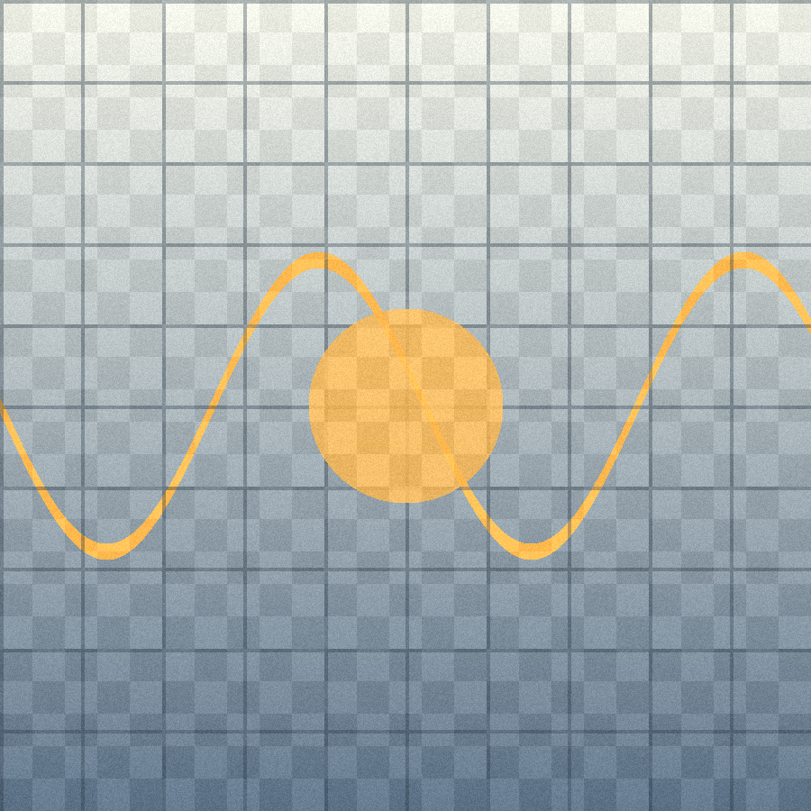

Фритрек и нулевой спринт: Подготовка к работе
<старт>

В начале всё выглядело как длинная инструкция без карты. Я собирал окружение, привыкал к терминалу и учился не пугаться новых слов, которые раньше казались чужим языком.
Самым важным было просто войти в ритм: открыть редактор, сделать маленький шаг, проверить результат и не требовать от себя полного понимания с первой попытки.